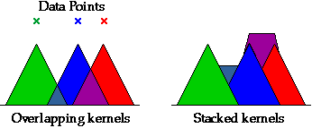

Histograms are 'boxy'
Histograms tend to have a rather 'boxy' outline unless the data set is very large. A kernel density estimate is an alternative display of density that is smoother than a histogram.
Kernel density estimate
In a kernel density estimate, each sample value is represented by an area of 'ink' called a kernel that is centred on the value. Where the kernels for adjacent sample values overlap, the areas of ink are stacked on top of each other. The diagram below shows triangular kernels for 3 data points. The areas where the triangles overlap are stacked on top of the triangles to their left.

Although triangular kernels can be used, a rounded kernel is more common. The width of the kernels can be adjusted to give the smoothest display. Very narrow kernels result in a peak at each data value, whereas very wide kernels spread the density estimate wider than the actual data. Some intermediate width will provide the best compromise between smoothness and closeness to the data.
The diagram below shows a dot plot of six values. Above it is a kernel density estimate based on these values.
Use the slider to adjust the width of the kernels and observe how the stacking of the kernels smoothes the density when the kernels are widened.
Click on individual crosses in the dot plot to highlight the corresponding kernel on the density estimate, then adjust the kernel width again to show how individual crosses' kernels are stacked.
Holiday home rental
The next diagram shows a kernel density estimate for the holiday home monthly rental data.
Use the slider to adjust the width of the kernels and give a smooth density estimate. If the kernels are too wide, the density estimate spreads out too far on each side of the data, but narrow kernels give a spiky estimate. An intermediate kernel width is the best compromise.